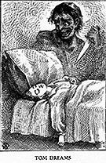

 In 1876, Twain published one of his most popular works of fiction--The Adventures of Tom Sawyer. The villain of the novel, Injun Joe, is unequivocally evil--there is little to stimulate the reader to sympathize with Joe's plight or understand his actions. However, Injun Joe acts out of more than just an evil nature--he is evil because of his "Indian blood," a fact which the novel's characters reiterate repeatedly.
Injun Joe's "evil Indian nature" is made more ominous by the culture of violence that Twain attributes to Native Americans. Joe is not satisfied to merely rob or humiliate the Widow Douglas; instead, he plans on torturing her in ways that he imagines are most excruciating for women. He says to , "When you get revenge on a woman you don't kill her--bosh! you go for her looks. You slit her nostrils--you notch her ears, like a sow's!" (208)
Injun Joe's torture fantasy is not developed without motivation; Joe explains that he wants revenge (another stereotype of American Indian behavior is the Indian's insatiable desire for revenge for any slight, no matter how small, done to them). He announces:"I tell you again, as I've told you before, I don't care for her swag--you may have it. But her husband was rough on me--many times he was rough on me--and mainly he was the justice of the peace that jugged me for a vagrant. And that ain't all. It ain't the millionth part of it! He had me horsewhipped!--horsewhipped in front of the jail, like a nigger!--with all the town looking on! HORSEWHIPPED!--do you understand? He took advantage of me and died. But I'll take it out on her."
Joe's reason for revenge is resonant of Magua's motivation revenge in Last of the Mohicans. Magua, a Huron Indian, transgressed a rule of the British army which stated that no Indian should drink alcohol and then enter a soldier's tent. Magua protests his punishment by claiming, "Magua was not himself; it was the fire-water that spoke and acted for him! but Munro did not believe it. The Huron chief was tied up before all the pale-faced warriors, and whipped like a dog " (Cooper 116).
Both Injun Joe and Magua defied public law and received the mandated punishment. Neither one was punished unjustly in the context of the narrative, and while both feel justifiable humiliation for the publicity of their punishment, neither experience engenders sympathy from the reader.
In The Adventures of Tom Sawyer, Injun Joe must be excised from the narrative as part of its eventual triumph. This is visible in the final chapters when first Tom and Becky, and then Injun Joe, are trapped in the cave. After Tom and Becky escape from the cave, Judge Thatcher places an iron door over the mouth of the cave to prevent any stragglers from similarly getting lost. In terms of the narrative structure, Injun Joe must die so that Tom can live.
Even more devastating than his death is the exploitation of Injun Joe's demise. During his fatal captivity in McDougal's cave, Injun Joe had used a cup to catch the precious drips of water from a stalactite; after his death, this cup assumed symbolic significance. "It is many and many a year since the hapless half-breed scooped out the stone to catch the priceless drops, but to this day the tourist stares longest at that pathetic stone and that slow dropping water when he comes to see the wonders of McDougal's cave. Injun Joe's Cup stands first in the list of the cavern's marvels; even "Aladdin's Place" cannot rival it" (240).
The success of Injun Joe's Cup in Twain's narrative implies many things about Twain's ideology concerning American Indians at this time. Primary among those things is the suggestion that American Indians have no place in American culture other than as relics exhibited as tourist attractions, or as beggars, living off of the government dole. The cup is a duplicitous symbol because it can imply either of these.